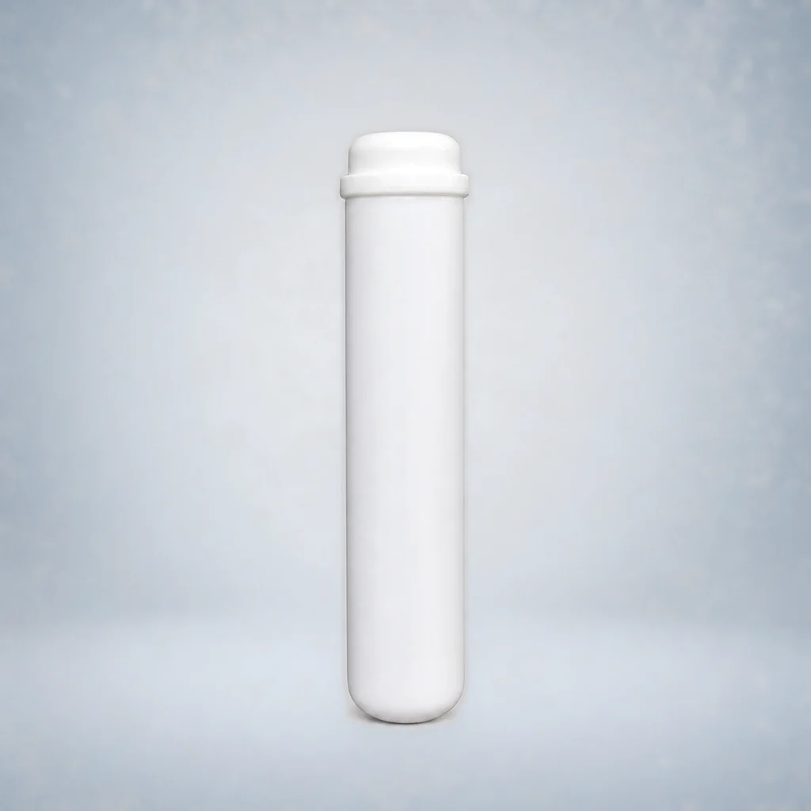
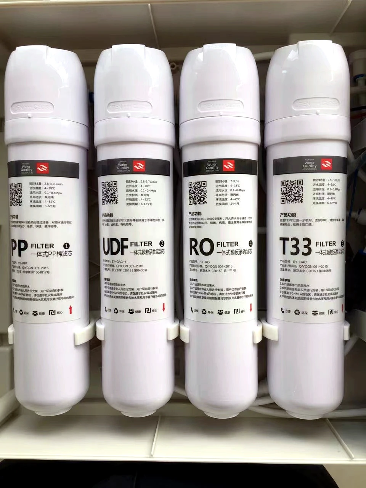
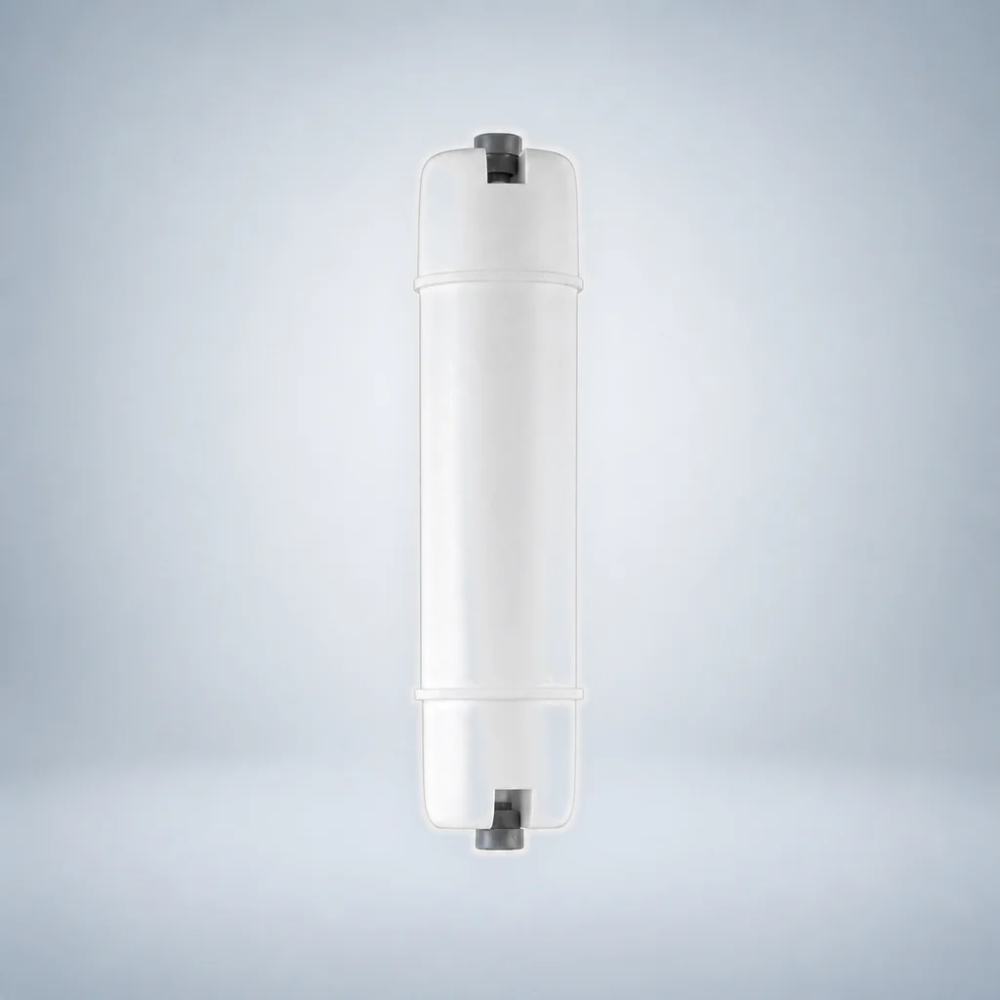
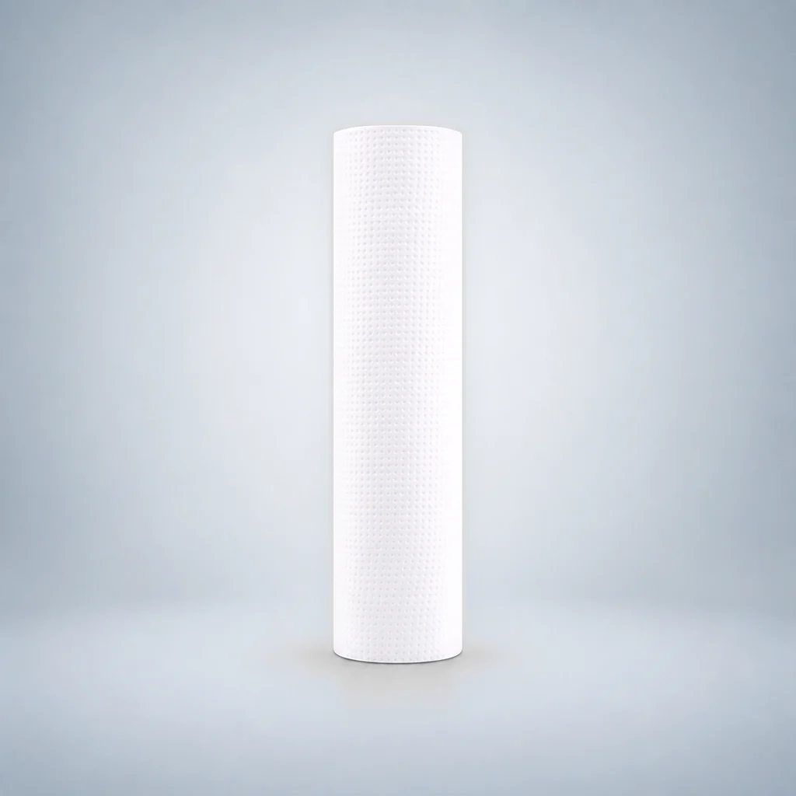
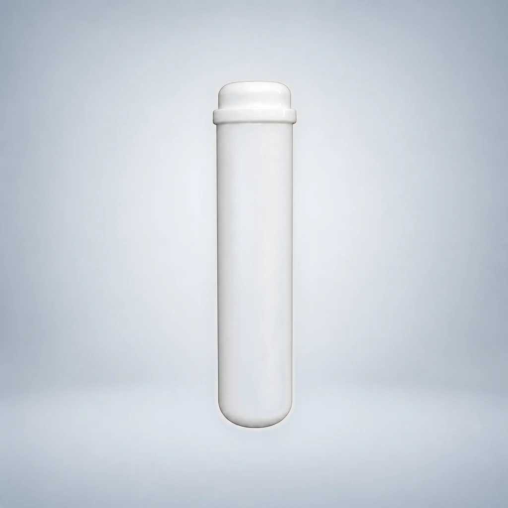
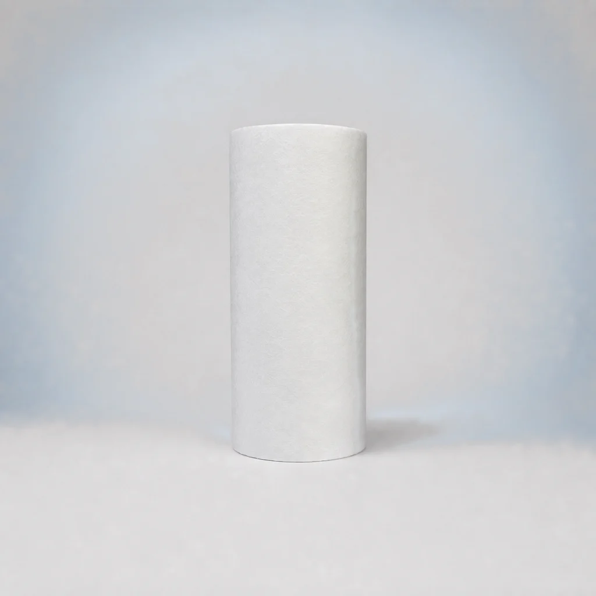
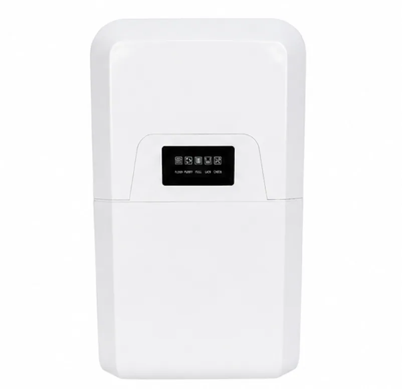

16 bản ghi model trên trang này
Lõi lọc PP thổi nóng chảy
Lọc sơ bộ cặn và hạt rắn.
Xác nhận: chiều dài, cấp lọc tính bằng micron, khối lượng và kiểu đầu lõi.
Duyệt các nhóm sản phẩm và so sánh những dòng sản phẩm phù hợp với dự án của bạn.
Chọn một nhóm sản phẩm hoặc tìm kiếm trong danh mục bên dưới.
Mở một dòng sản phẩm để xem các mẫu sản phẩm thuộc dòng đó, hoặc chọn 2–4 dòng sản phẩm để so sánh.
Có 27 dòng sản phẩm
Không có dòng sản phẩm phù hợp. Hãy thử tìm theo loại sản phẩm như RO, CTO hoặc vỏ lọc, hoặc xóa nội dung tìm kiếm.
Lọc sơ bộ cặn và hạt rắn.
Xác nhận: chiều dài, cấp lọc tính bằng micron, khối lượng và kiểu đầu lõi.

Lọc bằng than hoạt tính ép nén hoặc thiêu kết.
Xác nhận: nguồn nguyên liệu than, chỉ số iốt, cấp lọc tính bằng micron và kích thước.

Các cấp lọc bằng than hoạt tính dạng hạt.
Xác nhận: nguồn vật liệu lọc, phương pháp xử lý, khối lượng và khả năng lắp vừa vỏ lọc.

Các cấp lọc than hậu xử lý và lọc hoàn thiện lắp trực tiếp trên đường ống.
Xác nhận: đầu nối, kích thước, vật liệu lọc và lưu lượng của dự án.

Nhóm lõi lọc thay nhanh được phân loại theo kiểu kết nối.
Xác nhận: đầu lắp lõi lọc tương thích, hình dạng hình học của kết nối, kích thước và thứ tự các cấp lọc.

Nhóm lõi lọc thay nhanh được phân loại theo kiểu kết nối.
Xác nhận: đầu lắp lõi lọc tương thích, hình dạng hình học của kết nối, kích thước và thứ tự các cấp lọc.

Nhóm lõi lọc thay nhanh được phân loại theo kiểu kết nối.
Xác nhận: đầu lắp lõi lọc tương thích, hình dạng hình học của kết nối, kích thước và thứ tự các cấp lọc.

Nhóm lõi lọc thay nhanh được phân loại theo kiểu kết nối.
Xác nhận: đầu lắp lõi lọc tương thích, hình dạng hình học của kết nối, kích thước và thứ tự các cấp lọc.

Nhóm lõi lọc thay nhanh được phân loại theo kiểu kết nối.
Xác nhận: đầu lắp lõi lọc tương thích, hình dạng hình học của kết nối, kích thước và thứ tự các cấp lọc.

Nhóm lõi lọc thay nhanh được phân loại theo kiểu kết nối.
Xác nhận: đầu lắp lõi lọc tương thích, hình dạng hình học của kết nối, kích thước và thứ tự các cấp lọc.

Nhóm lõi lọc thay nhanh được phân loại theo kiểu kết nối.
Xác nhận: đầu lắp lõi lọc tương thích, hình dạng hình học của kết nối, kích thước và thứ tự các cấp lọc.

Nhóm lõi lọc thay nhanh được phân loại theo kiểu kết nối.
Xác nhận: đầu lắp lõi lọc tương thích, hình dạng hình học của kết nối, kích thước và thứ tự các cấp lọc.

Các phần tử màng thẩm thấu ngược.
Xác nhận: mẫu sản phẩm, công suất và khả năng tương thích với vỏ màng và bơm.

Các cấp lọc bằng màng siêu lọc sợi rỗng.
Xác nhận: vỏ bộ lọc, đầu nối, lưu lượng và điều kiện vận hành.

Các nền tảng thiết bị để bàn và máy cấp nước có chức năng gia nhiệt tức thì.
Xác nhận: điện áp, phích cắm, bảng điều khiển, nhiệt độ và nhận diện thương hiệu.

Thiết bị cung cấp nước uống cho văn phòng, trường học và các cơ quan, tổ chức.
Xác nhận: số người sử dụng hằng ngày, các đầu cấp nước, khả năng lưu trữ nước và chuỗi công đoạn lọc.

Các hệ thống lọc nước dùng cho mục đích thương mại có lưu lượng cao hơn.
Xác nhận: nước cấp, lưu lượng mục tiêu, bồn chứa và không gian lắp đặt.

Các nền tảng thiết bị cấp nước dùng cho mục đích thương mại có tùy chọn tích hợp thanh toán.
Xác nhận: phần cứng thanh toán, khu vực, chức năng đo và truyền dữ liệu từ xa và mô hình dịch vụ.

Lọc nước uống bằng thiết bị dùng cho gia đình và thiết bị lắp dưới bồn rửa.
Xác nhận: công suất, việc lắp đặt, bình chứa, các cấp lọc và nguồn nước.

Các cấu hình RO dạng tủ và dạng tích hợp.
Xác nhận: số cấp lọc, tùy chọn UV, điện áp và cấu hình tủ.
Các nền tảng máy lọc nước RO lưu lượng cao dùng cho mục đích thương mại.
Xác nhận: phân tích nước cấp, lượng nước đầu ra, khả năng lưu trữ nước và yêu cầu về điện.

Các hệ thống nước uống và cấp nước dùng cho mục đích thương mại.
Xác nhận: nhu cầu tại địa điểm sử dụng, nước cấp, lượng nước đầu ra và khả năng lưu trữ nước.

Các hệ thống thẩm thấu ngược công nghiệp dành cho dự án.
Xác nhận: phân tích nước, công suất, tỷ lệ thu hồi mục tiêu và tiền xử lý.

Các hệ thống khử mặn nước biển dành riêng cho từng dự án.
Xác nhận: độ mặn của nước cấp, mục tiêu đối với nước thành phẩm, công suất và hạ tầng tiện ích tại địa điểm lắp đặt.

Vỏ bộ lọc PP, Big Blue và thép không gỉ.
Xác nhận: vật liệu, các cổng kết nối, áp suất, giá đỡ và khả năng lắp vừa lõi lọc.

Các hệ thống làm mềm nước tự động bằng trao đổi ion.
Xác nhận: độ cứng, lưu lượng, nhựa trao đổi ion, van và các thiết lập tái sinh.

Tiền xử lý tự động và lọc bằng vật liệu lọc.
Xác nhận: vật liệu lọc, nguồn nước, lưu lượng và điều kiện rửa ngược.
So sánh phạm vi cung ứng và các điều kiện cần xác nhận. Các loại sản phẩm khác nhau không được xếp hạng theo hiệu suất.